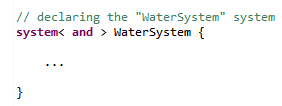
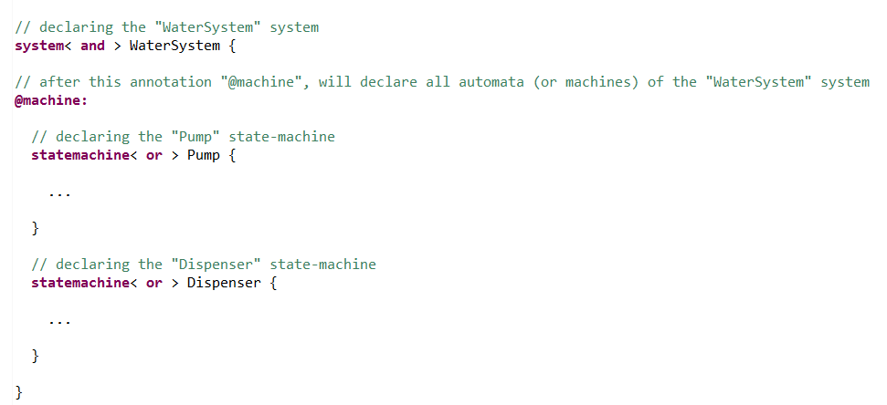
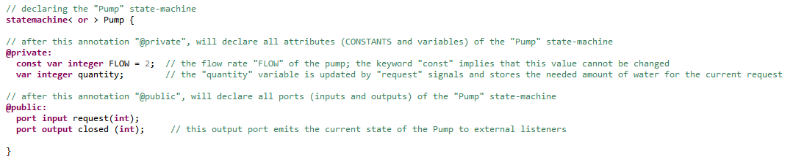
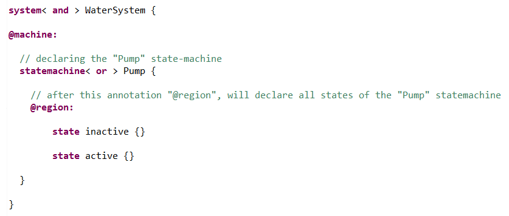
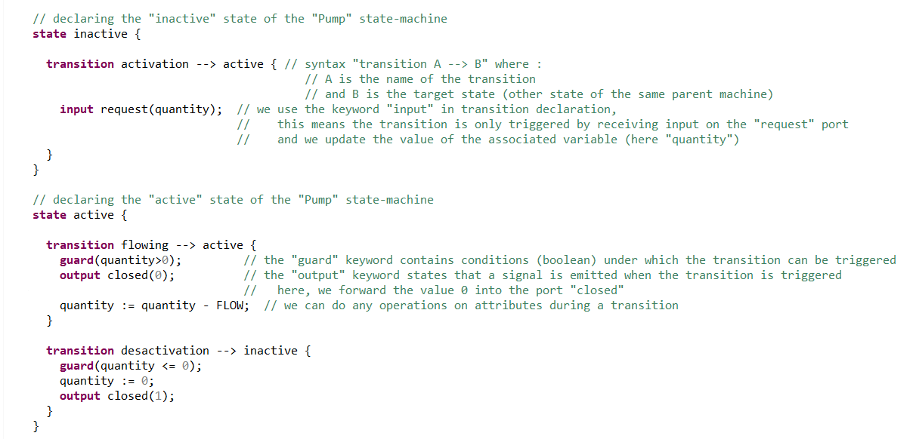
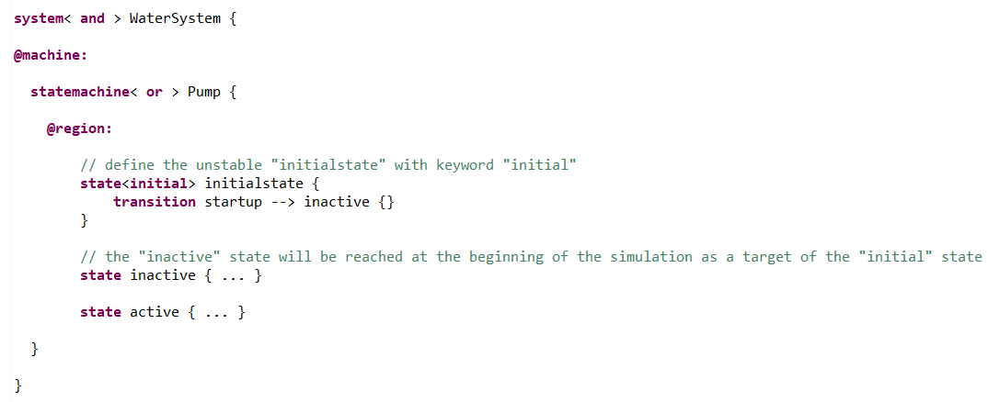
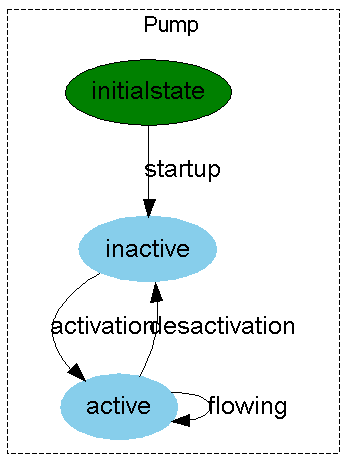
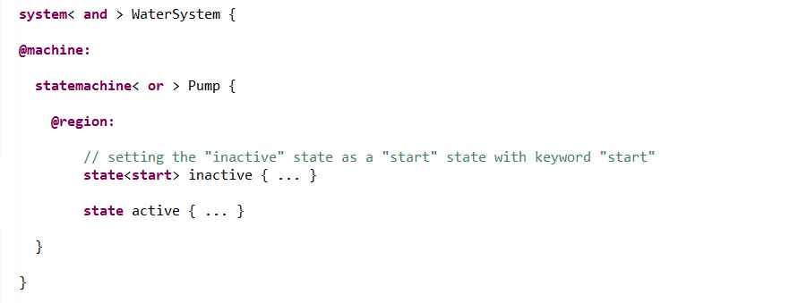
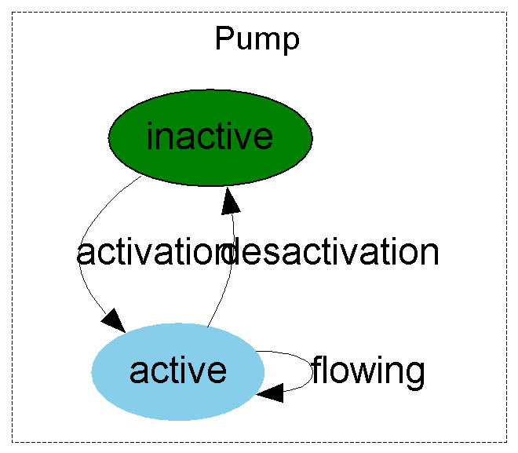

First, we will declare the system : an object of type "system" (and for this present tutorial, of name "WaterSystem").
The system object will be fleshed-out with code written inside a block between brackets as seen in the picture below.
Then, we will list all the automata (state-machines) that exist within our system (in this present tutorial there are "Pump" and "Dispenser").
The state-machine object will be fleshed-out with code written inside a block between brackets as seen in the picture below.
After that, we need to declare the different attributes or (CONSTANTS and variables) and channels of communication (ports) that constitute the properties of our automaton.
We will do it here for the "Pump" state-machine which has, as we've defined it, 2 variables and 2 ports.
There are several equivalent ways to do it (as we can see in "properties") and here is one :
NOTE : "flow" is an XLIA Keyword (see XLIA Reference Documentation). Therefore we can't use it in our code. We will instead use "FLOW" (case sensitive).
XLIA is a typed language; we need to specify the types of the attributes (here "integer") and of the objects that travel through the ports (here also "int"). The different possible base types are :
Then, we need to declare all the possible states for the different state-machines. To declare the states of a given state-machine, we list declarations in an area that begins with the annotation "@region" in the body of the parent state-machine.
As we've defined previously, the "Pump" state-machine has 2 states : "inactive" and "active". This gives us the code :
The state objects will be fleshed-out with code written inside a block between brackets as seen in the picture above.
Transitions are events that lead a state-machine to change from one state to another. In this tutorial, we won't cover everything about transitions (see transitions for details).
All the transitions that leave an origin state must be specified inside the body of that origin state. In the body of the state, we list all transitions with the keyword "transition".
For the "Pump" state-machine, we define the transitions in the picture below (see comments or transitions for basic syntax explanations) :
However, for our system to be working, we must specify for each state-machine in which one of its declared state the it must start i.e. which is the initial state.
Let's suppose we want the simulation to begin with an inactive pump. Diversity provides two methods of doing so (see "initial" vs "start").
With this method, we must add a third state to the "Pump" state-machine. This state is an unstable "source-state" that will be immediately left at the beginning of the simulation.
To do that, we define an "initialstate" with the keyword "initial". We fit this "initialstate" with a transition to the "inactive" state.
By following this method, we will end up with the following code and state-machine :
 We strongly recommend using this method over the next one, as it reproduces the standard UML design.
With this method there is no need to have a third state. We just add the keyword "start" to the "inactive" state so that the "Pump" state-machine will go to this state at the beginning of the simulation.
To do that we use a flag "start" in the declaration of the state.
 